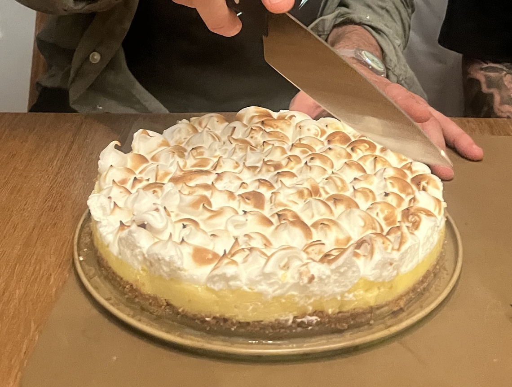

Tarte au citron
Ingrédients
6×
- 75 g de sucre
- 2 oeufs entiers
- 3 jaunes d'oeufs
- 20 cl de jus de citron
- zeste de citron
- 105 g de beurre fondu
- 25 g de Maïzena
- 200 g de speculoos
- plat de 20/25 cm
- 3 blancs d'oeufs
- 1 pincée de sel
- 150 g de sucre glace

Préparation
Étape 1
Battre 75 g de sucre avec 2 oeufs entiers et 3 jaunes d'oeufs.
Étape 2
Ajouter 20 cl de jus de citron, du zeste de citron, 30 g de beurre fondu, et 25 g de Maïzena diluée avec un peu d’eau. Porter à ébullition sans cesser de remuer jusqu’à épaissir.
Étape 3
Écraser 200 g de speculoos et les mélanger avec 75 g de beurre fondu. Étaler au fond du plat de 20/25 cm et mettre au frais pendant 30min.
Étape 4
Préparer une meringue avec les 3 blancs d'oeufs et 1 pincée de sel.
Monter les blancs en neige et ajouter 150 g de sucre glace petit à petit.
Étape 5
Assembler.
Étape 6
Dorer la tarte quelques minutes au four en mode grill ou au chalumeau.
Résumé
75 g de sucre
2 oeufs entiers
3 jaunes d'oeufs
Battre
20 cl de jus de citron
zeste de citron
30 g de beurre fondu
25 g de Maïzena
Ajouter Porter à ébullition
200 g de speculoos
75 g de beurre fondu
plat de 20/25 cm
Écraser mélanger Étaler
3 blancs d'oeufs
1 pincée de sel
Préparer une meringue
150 g de sucre glace
Monter les blancs en neige
Assembler
Dorer